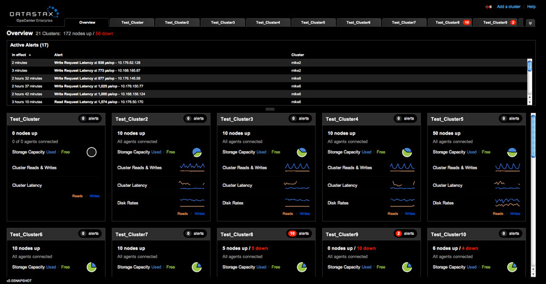

Lately I’ve been trying out Cassandra @ work. Just recently I took a webinar that DataStax hosted (the commercial company behind Cassandra), and conducted by Tim Berglund (@tlberglund). The webinars introduce Cassandra for developers and operations. A great way to get started understanding what Cassandra does, and doesn’t do. (Tim’s training videos on O’Reilly are excellent by the way).
Cassandra is a schema-less, scalable, distributed database. There’s actually more to it than that, but the list of it’s capabilities is rather long :-). Surprisingly, it’s also relatively easy to setup. I found the setup process simpler than earilier versions of MySQL, yet you get far more from a brief configuration.
Single node setup
Setting up a single node of Cassandra is straight forward, but it is handy to have some notes in one place, since there may be some additional files you need to download if you want some of the features provided by the OpsCenter package that DataStax makes available for monitoring your Cassandra cluster. More about that later.
First, decide if you want the Apache version (no OpsCenter available with this version) or the DataStax Community version.
Cassandra runs on the JVM, so make sure you have a version of the Java runtime environment. I’ve tested with both Oracle Java 6 & 7. The OpenJDK is not recommended. One caveat about Java 7 below.
I’ll be using the DataStax Community edition, which at this time is v1.1.0.
Once you’ve downloaded the version for your OS, go ahead and install it. I’m using the tarball: dsc-cassandra-1.1.0-bin.tar.gz
Configuration
Edit your conf/cassandra.yaml
file.
initial_token
You can set this to 0 for a
single node, but read the notes below if you setup a cluster.
directories
Decide where you want your data files,
commit log, and cache to be saved to. Needs to be a path you have permissions to read/write.
seeds, listen_address, rpc_address
You can leave these
as the defaults, but you’ll want to change these for cluster configurations.
Java 7
Depending on the version of Cassandra you are
running with Java 7, the initial amount of memory set for the stack space
appears to be too small. (it works fine with v1.1.0). However, if you run into
an error from the JVM about memory, change the following line in
conf/cassandra-env.sh (near line
153):
JVM_OPTS=”$JVM_OPTS -Xss128k”
and change it
to
JVM_OPTS=”$JVM_OPTS -Xss160k”
At this
point, you can go ahead and try running Cassandra:
bin/cassandra
-f
This will run it in the foreground, allowing you to see
any errors.
If you scroll through the output, you will see two items not
available:
…
JNA not found. Native methods will be
disabled.
…
Will not load MX4J, mx4j-tools.jar is not in the classpath
These features (JNA and mx4j) can be downloaded and installed to the
cassandra/lib path by getting them from:
http://sourceforge.net/projects/mx4j/files/
https://github.com/twall/jna
You need the mx4j-tools.jar from the mx4j project.
You need the jna.jar
and platform.jar for JNA support.
Once you have the jar files copied, stop
and then restart Cassandra.
Assuming no errors, at this point you have a working Cassandra node. You can go ahead and create a keyspace (database), and column families (tables).
Cluster setup
This is mostly a repeat of the single node setup. Install and configure Cassandra on your other nodes, but this time you will be filling in the config section for ‘seeds’ by adding a few of the IPs from the other nodes. This allows the nodes to start talking to each other, and learn the topology of the network. You don’t need to include all the other nodes, just enough for the cluster to start talking to itself.
initial_token
You really want to set the inital_token
for each node you are installing to. As noted in the conf file, poorly
chosen tokens will lead to hotspots for your data. There is a site available for
generating tokens depending on the number of nodes you have here.
seeds
As mentioned above, you will want to add some of
the IP addresses of the other nodes (even if those nodes are simply running in a
virtual machine). Modify this line, and make sure the list of IPs is within the
quotes:
seeds: “192.168.10.100, 192.168.10.101, 192.168.10.103”
listen_address:
Set this to the local host IP address
(the address that you will be configuring some of the other nodes to talk to).
rpc_address:
I set this to the same IP as I’m
using for the listen_address - the local host IP.
Ready
At this point, the node is ready to become
part of a cluster. You will need to perform all of the single node and cluster
setup as described above on each node that you want as part of the cluster. Go
ahead and start up your Cassandra instances.
OpsCenter
Take a look at this:
Download the OpsCenter. This is pretty cool. The OpsCenter is your dashboard, allowing you to setup, modify, observe and maintain your Cassandra cluster.
OpsCenter setup
There are two parts to the OpsCenter, as far as configuration goes:
The
OpsCenter itself
The agent that sends data to the OpsCenter
You
only need the OpsCenter running on one server, but you need the agent running on
each node, so that it can feed information to the OpsCenter.
conf/opscenterd.conf
Set the interface value to
your local host IP
I also turned off ssl, since I’m just setting this up as a test cluster using several virtual machines, by adding this under [agents]:
[agents]
use_ssl = false
agent/conf/address.yaml
You can create this by running
the bin/setup program, but for a simple entry, you can just create it yourself.
One difference here, will be the ‘stomp_interface’ - this is the IP
address of the server where you want to run the OpsCenter. The agents on all
nodes should be using the same OpsCenter IP address to talk to. Also note that
here also, I’ve turned off ssl.
stomp_interface: “192.168.10.100”
use_ssl: 0
You will need to setup the agent configuration on each node.
Then run the agent:
agent/bin/opscenter-agent -f
To turn on the OpsCenter:
bin/opscenter -f
Then use your browser to connect to the IP address that you configured OpsCenter to use, via port 8888.
If all has gone well, at this point you have Cassandra and OpsCenter up
and running, and you can see your cluster. Time to start creating keyspaces
(databases) and column families (tables). Then look into CQL :-).
I also recommend the #cassandra channel on freenode for questions, and the documentation on the DataStax site is extensive.
Hope this helps.